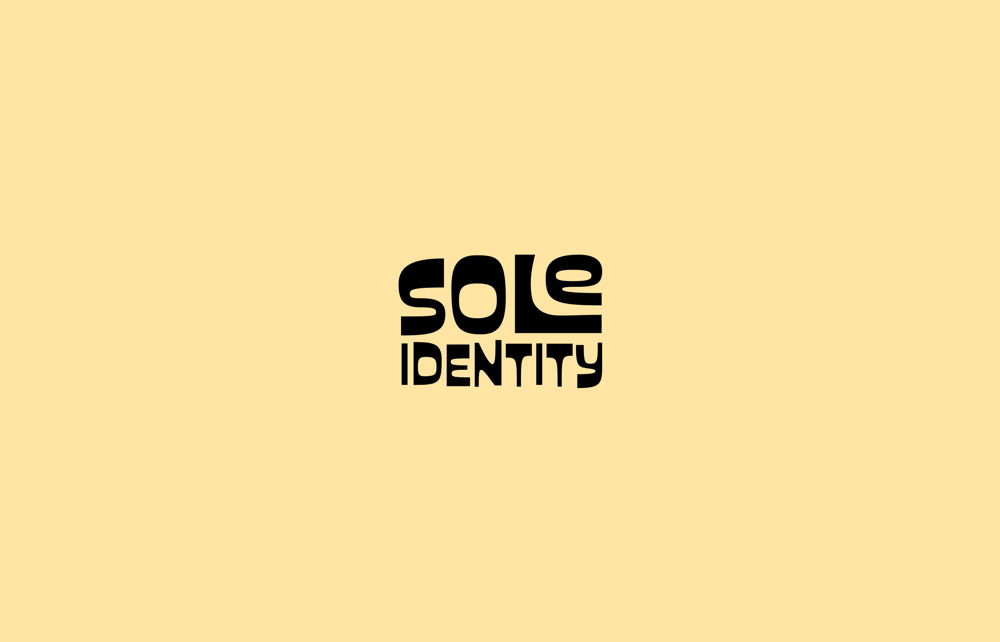

Featuring installations by Filipino artisans, photographs, and multimedia displays, Sole Identity invites visitors to step into the rich history and traditions of the Philippines while also confronting the social and economic realities that shape Filipino communities today. Designed as an interactive learning experience, the exhibition aims to bridge, educate, and celebrate the cultural heritage of the Filipino diaspora, particularly engaging Filipino immigrants, Filipino Americans, and Asian American communities in Northern California.
Immersive exhibition that explores the cultural and social significance of the Filipino Tsinelas (flip-flops) — a simple yet deeply symbolic object in Filipino life.
| COLLABORATORS | Shali Bal, Maureen Caling |
|---|---|
| ROLE | Graphic Designer |
| YEAR | 2023 |
| DURATION | 10 weeks |
| TOOLS | Adobe Illustrator, Adobe Photoshop |
More than just footwear, tsinelas transcend their practical purpose, serving as a reflection of Filipino values, traditions, and identity across generations, regions, and socioeconomic backgrounds. The exhibition highlights how this everyday item embodies both cultural pride and the complexities of the Filipino experience.
The graphic elements are meant to convey the energy and message of the exhibition itself — from the color palette consisting of primary colors inspired by the Filipino flag to the key exhibition promotion image representing the exhibition's community aspect. Some versions of the exhibition title treatment use similar textures to the materials in the exhibition. While the typeface palette includes both fun and funky typeface, which reflect Filipino culture, and two clean sans-serif typefaces to create contrast and ensure that the body text is legible.
COLOR AND TYPOGRAPHY
The primary colors are inspired by the colors of the Filipino flag to reflect the cultural nature of the exhibition. The secondary colors are used for when colors might look overwhelming or distracting.
The typeface used for titles is Custard, Prompt is for subheadings, and Khula for body text. Since Custard is a typeface with lots of character and curvy lines, Prompt and Khula are chosen to create contrast and make sure the visitor can easily read the content.
Thank you for making it this far